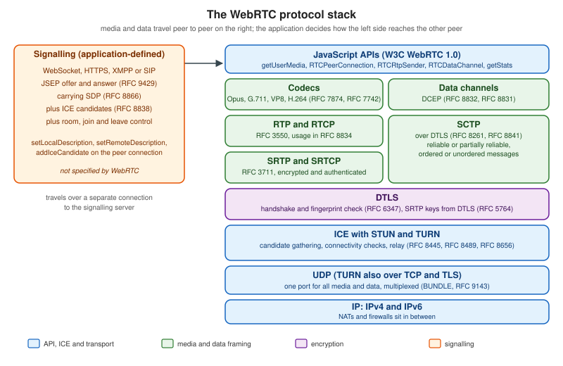

WebRTC Architecture
|
This content was generated with the assistance of AI and should be verified against the official documentation before being relied on in production. |
WebRTC (Web Real-Time Communication) is a set of browser APIs and network protocols that let two endpoints exchange audio, video and arbitrary data with low latency, directly where the network allows it. It is not one protocol: it is a stack of about a dozen IETF protocols assembled by a W3C API. This page is the map of that stack. It names every moving part, shows how the parts relate during a call, lists the specifications with their current numbers, tells you where to look when a call does not connect, and maps the three scenarios of this section to the features each one needs. The following pages take the parts one at a time.
Versions and specifications were checked on 2026-10-24. The baseline is the W3C WebRTC 1.0 Recommendation (the
2025-03-13 edition, which incorporates the amendments tested for interoperability) with Media Capture and Streams,
the IETF JavaScript Session Establishment Protocol in RFC 9429 (which obsoletes RFC 8829), BUNDLE in RFC 9143 (which
obsoletes RFC 8843), SDP in RFC 8866 (which obsoletes RFC 4566), ICE in RFC 8445, STUN in RFC 8489 and TURN in
RFC 8656. The examples were run on Node.js 24 with ws 8.22.0 and puppeteer-core 25.16.0 driving Chrome 155 with
fake camera and microphone devices.
What WebRTC is for
A browser can already talk to a server over HTTP and WebSocket. WebRTC adds three things that those cannot give:
-
Direct, encrypted, congestion-controlled media. Audio and video are captured, encoded, packetised, encrypted and sent over UDP, with jitter buffers, loss concealment and bandwidth estimation built into the browser. A WebSocket over TCP cannot drop a late video frame, so it cannot hold the 150 ms mouth-to-ear budget on a lossy network.
-
Unreliable, unordered data. Data channels offer a message transport over UDP whose reliability is chosen per channel, which is what a game needs and what WebSocket cannot offer.
-
NAT traversal. ICE finds a working path between two machines that sit behind home routers and corporate firewalls, falling back to a relay when no direct path exists.
What WebRTC does not give you is a way to find the other peer. There is no directory, no room, no identity and no call-setup channel in the standards. Applications build that themselves, and the part they build is called signalling.
The moving parts
A call involves seven cooperating parts. The figure shows them as a stack, with signalling drawn beside it because it is outside the standard.

Capture
navigator.mediaDevices.getUserMedia() and getDisplayMedia() turn a camera, a microphone or a screen into
MediaStreamTrack objects. They need a secure context (HTTPS or localhost), a user permission, and for
getDisplayMedia() a user gesture. Device labels stay empty until permission is granted, an iframe needs a
Permissions-Policy that delegates camera and microphone, and remote audio is subject to the browser’s autoplay
rules. Capture is specified separately from the peer connection (W3C Media Capture and Streams) and is covered in
Media Capture and Devices and
Screen Sharing.
The peer connection
RTCPeerConnection is the object that owns one connection to one remote peer. It holds the ICE agent, the DTLS and
SRTP state, the RTP senders and receivers (one RTCRtpTransceiver per media section), and the SCTP association used by
data channels. You attach tracks with addTrack() or addTransceiver(), create data channels with
createDataChannel(), and the browser tells you what to do next through events: negotiationneeded, icecandidate,
track, datachannel, connectionstatechange and iceconnectionstatechange. The object is described in detail in
Peer Connections and SDP.
A peer connection is one transport to one peer. A call between ten people is ten peer connections per participant in a mesh, or one in an SFU design (see Topologies: Mesh, SFU and MCU).
Signalling
Before two browsers can exchange media they must agree on what to exchange (codecs, number of streams, data channels) and learn each other’s network addresses and certificate fingerprints. The agreement is written as a session description in SDP and exchanged as an offer and an answer (JSEP, RFC 9429). The addresses arrive as ICE candidates. WebRTC defines how to produce and consume these blobs but deliberately does not define how to deliver them: that is the application’s signalling channel. Chatterbox-style WebSocket servers, Socket.IO, SignalR, XMPP with Jingle and SIP over WebSocket (RFC 7118) are all valid. Signalling carries only a few kilobytes per call setup, so any of the servers in this section is fast enough, but it must be reliable, ordered per peer and authenticated. Signaling and Perfect Negotiation builds a complete signalling server and handles the glare case, where both peers offer at once.
ICE, STUN and TURN
Interactive Connectivity Establishment (RFC 8445) is the algorithm that finds a working network path. Each side gathers candidates: its own addresses (host), the address a STUN server (RFC 8489) reports for it (server reflexive), the address of a TURN relay (RFC 8656) allocated for it (relay), and addresses learned during checks (peer reflexive). The peers pair their candidates, send STUN binding requests on each pair, and nominate the best pair that answers. Candidates travel through signalling, either all at once or trickled as they are found (RFC 8838). Most connections succeed with host or server-reflexive pairs. A minority, typically those behind symmetric NATs or UDP-blocking firewalls (see the NAT section), need a TURN relay, which is why a production deployment always runs one. See ICE, STUN and TURN.
DTLS-SRTP
Every WebRTC connection is encrypted; there is no unencrypted mode. After ICE nominates a pair, the peers run a DTLS
handshake (RFC 6347; the WebRTC security architecture in RFC 8827 requires support for DTLS 1.2) over the same UDP
flow. The certificate each side uses is self-generated, so DTLS authenticates nothing by itself: instead each side
puts the fingerprint of its certificate in its SDP (a=fingerprint), and the handshake succeeds only if the
certificate presented matches the fingerprint received through signalling. The security of a call therefore depends on
the integrity of the signalling channel. From the handshake the peers derive keys for SRTP (RFC 3711, with the key
derivation in RFC 5764), which protects the audio and video packets, and the same DTLS session carries SCTP for data
channels.
DTLS-SRTP encrypts each hop. When the two ends are browsers connected directly, hops equal ends. When an SFU sits in
the middle, the SFU terminates DTLS and SRTP from each sender and re-encrypts to each receiver, so it can see the media.
End-to-end confidentiality through an SFU needs a second layer, SFrame (RFC 9605), applied with encoded transforms
(RTCRtpScriptTransform) and a key-distribution scheme. That is the subject of
End-to-End Encryption.
Media transport: RTP and RTCP
Encoded audio and video frames are split into packets and sent with RTP (RFC 3550); the receiver reports loss and
jitter with RTCP. RFC 8834 lists what a WebRTC endpoint must support: RTP and RTCP multiplexed on one port (rtcp-mux),
the audio-level header extension (RFC 6464) that SFUs use for active-speaker detection, retransmission requests (NACK),
keyframe requests (PLI and FIR), and congestion control. Congestion control matters most: browsers estimate the
available bandwidth continuously and adapt the encoder bitrate, using transport-wide congestion control feedback
(a widely implemented IETF draft, draft-holmer-rmcat-transport-wide-cc-extensions) with Google Congestion Control. RFC 8888
standardises congestion-control feedback in RTCP and is the number to cite, but browsers still ship the draft
mechanism. The statistics are covered in
Stats, Quality and Bandwidth.
BUNDLE (RFC 9143) multiplexes all media sections and the data channel over one ICE transport, so one UDP flow, one
DTLS handshake and one NAT mapping serve the whole call. This is why the SDP shows a=group:BUNDLE 0 1 2.
Data channels: SCTP over DTLS
RTCDataChannel messages ride on SCTP (RFC 9260, which obsoletes RFC 4960, with the DTLS encapsulation in RFC 8261) inside the DTLS session.
RFC 8831 defines the data channel protocol, RFC 8832 the in-band Data Channel Establishment Protocol that opens a
channel, and RFC 8841 the SDP line (m=application ... UDP/DTLS/SCTP webrtc-datachannel) that negotiates the
association. SCTP is message-oriented, supports many independent streams so one lost packet does not block other
channels, and offers per-channel reliability: ordered or unordered, with a retransmission limit or a lifetime. See
Data Channels, which builds on the
AI-oriented data channel page.
Codecs
A WebRTC endpoint must implement Opus and G.711 for audio (RFC 7874) and VP8 and H.264 constrained baseline for video
(RFC 7742). Browsers add VP9 and AV1, and some add H.265, depending on the version and the hardware. The codec
list is negotiated in SDP (a=rtpmap) and the sender may refuse any codec the receiver offers. Opus is the only audio
codec most applications use. For video, the choice of codec trades CPU, bandwidth and compatibility, and is covered in
Codecs, Simulcast and SVC.
A call from start to finish
The sequence below is a call between two Huddle participants through a signalling server and a STUN or TURN service. Signalling uses the WebSocket path; media and the data channel use the direct or relayed UDP path.
The sequence hides a state machine the application can observe. RTCPeerConnection.signalingState follows the
offer/answer exchange (stable, have-local-offer, have-remote-offer, back to stable). iceGatheringState
goes from new through gathering to complete. iceConnectionState and the aggregate connectionState go from
new through connecting to connected, and may later become disconnected (no recent packets, often recovers),
failed (every pair failed, an ICE restart is needed) or closed. A correct client reacts to failed by restarting
ICE and to negotiationneeded by creating a new offer, rather than by polling.
The specification map
WebRTC is specified in two organisations. The W3C defines the JavaScript APIs; the IETF defines the protocols the browser speaks on the wire and the overview documents. The table lists the documents a developer meets, with the current numbers.
| Area | Document | What it defines |
|---|---|---|
API |
WebRTC 1.0 (W3C Recommendation, 2025-03-13) |
|
API |
|
|
API |
the |
|
Overview |
RFC 8825 (overview), RFC 8826 (security considerations), RFC 8827 (security architecture), RFC 8828 (IP address handling) |
the reasoning behind the suite, the threat model, the DTLS fingerprint model, and the rules for exposing local addresses |
Session description |
RFC 9429 (JSEP, obsoletes RFC 8829), RFC 8866 (SDP, obsoletes RFC 4566), RFC 9143 (BUNDLE, obsoletes RFC 8843) |
offer/answer rules in the browser, the text format of descriptions, and one transport for all media |
NAT traversal |
RFC 8445 (ICE), RFC 8838 (trickle ICE), RFC 8489 (STUN), RFC 8656 (TURN), RFC 7064 and RFC 7065 (STUN and TURN URIs) |
candidate gathering and checks, incremental candidates, address discovery, relaying, and the |
Security |
RFC 5764 (DTLS-SRTP), RFC 6347 (DTLS 1.2), RFC 3711 (SRTP), RFC 9605 (SFrame) |
key agreement for media, the handshake, packet protection, and end-to-end frame encryption |
Media |
RFC 3550 (RTP), RFC 8834 (media transport), RFC 7874 (audio codecs), RFC 7742 (video codecs), RFC 6716 (Opus), RFC 6464 (audio level) |
packetisation and reporting, what an endpoint must implement, the mandatory codecs and the level header extension |
Simulcast |
RFC 8851 (RID), RFC 8853 (simulcast in SDP) |
several encodings of one source, selected by an SFU |
Data |
RFC 8831 (data channels), RFC 8832 (DCEP), RFC 8841 (SCTP in SDP), RFC 8261 (SCTP over DTLS), RFC 9260 (SCTP) |
channel semantics and reliability modes, channel opening, negotiation, and transport |
Transport overview |
RFC 8835 (transports for WebRTC) |
how ICE, DTLS, SCTP and RTP fit together |
Several mechanisms that every browser implements are not in an RFC. Multicast DNS host candidates (which hide local
IP addresses behind random .local names) come from draft-ietf-rtcweb-mdns-ice-candidates, which has expired.
Transport-wide congestion control comes from draft-holmer-rmcat-transport-wide-cc-extensions, also expired. The
TURN REST API that issues time-limited credentials was never published as an RFC. All three are de facto standards:
this section labels them as drafts or conventions and cites RFC 8888 when it talks about congestion feedback.
Two relatives of WebRTC are still moving. WHIP (WebRTC-HTTP Ingestion Protocol) is RFC 9725; its counterpart for
playback, WHEP, is still the Internet-Draft draft-ietf-wish-whep (revision 05 at the time of writing). Media over
QUIC is the Internet-Draft draft-ietf-moq-transport (revision 22), and WebTransport is a W3C Candidate
Recommendation Snapshot. Both are covered as emerging alternatives in
WebTransport and Media over QUIC and
WHIP, WHEP and Live Streaming, not as recommendations.
Browser support
RTCPeerConnection, data channels, getUserMedia() and getStats() are available in current Chrome and Edge
(Chromium), Firefox and Safari on desktop, and in Safari and the other WebKit-based browsers on iOS. Interoperability
between engines is good for audio, VP8, H.264 and data channels. The differences you meet in practice are:
-
Video codecs beyond the mandatory two. VP9, AV1 and H.265 availability depends on the browser version, the operating system and the hardware. Always read the real list with
RTCRtpReceiver.getCapabilities('video')(the first example below does), and keep H.264 or VP8 as the fallback. -
Newer APIs.
RTCRtpScriptTransform(the standard encoded-transform API) is in current browsers, but Chrome’s oldercreateEncodedStreams()is legacy andMediaStreamTrackProcessorandMediaStreamTrackGeneratordo not ship everywhere. Feature-detect each one. -
Background and iOS behaviour. Mobile browsers pause or throttle capture and media when the tab goes to the background or the screen locks.
-
Shims. adapter.js (the
webrtc-adapterpackage, currently 9.0.6) once papered over prefixed APIs and old behaviours. Version 9 removed most of those shims, and the pages here do not depend on it. Use it, if at all, only to smooth remaining behavioural differences.
Check current compatibility on the MDN compatibility tables for the specific API you use, not on an overview page.
Debugging tools
When a call fails, three places show what the browser negotiated and measured.
-
chrome://webrtc-internals(Chrome and Edge, open it in a separate tab before the call starts) lists every peer connection with its configuration, its event timeline (signalling state, ICE state, each candidate), the full local and remote SDP, and live graphs of everygetStats()metric. It can download a dump of all of this as JSON, which is the right attachment for a bug report. -
about:webrtc(Firefox) shows the same information: the connection log, the SDP, the ICE candidate pairs with their state, and per-stream statistics. -
Safari has no equivalent page. Enable the Develop menu, then the WebRTC logging options, and read the Web Inspector console, or collect
getStats()output in your own code.
The browser-independent tool is getStats() itself. Writing a few lines that log the selected candidate pair, the DTLS
state and the codec of each inbound stream (the second example does exactly that) turns a vague "video does not work" into
a concrete answer. The Trickle ICE sample page of the WebRTC samples (https://webrtc.github.io/samples/) tests whether
a STUN or TURN server hands out the candidates you expect.
How the three scenarios use WebRTC
| Feature | Chatterbox (chat) | Huddle (videoconference) | Pixel Arena (game) |
|---|---|---|---|
Capture ( |
not needed |
camera, microphone, screen share |
optional voice chat |
Peer connection |
not needed, WebSocket is enough |
one per remote peer (mesh) or one to the SFU |
one to the game server, or one per player |
Signalling |
the existing Chatterbox server |
a WebSocket relay for offers, answers and candidates |
the lobby server of the game |
ICE with STUN and TURN |
not needed |
required, TURN as fallback |
required for peer-to-server or peer-to-peer data |
Audio and video (SRTP) |
not needed |
the core feature |
optional |
Data channels (SCTP) |
optional, for peer-to-peer file transfer |
chat inside the call, hand-raise, reactions |
unordered unreliable channel for input and state |
Chatterbox does not need WebRTC: its messages are small, ordered and reliable, which WebSocket serves well, and the
chat architecture gains nothing from peer-to-peer. Huddle is the
canonical WebRTC application, and the videoconference
architecture page shows how mesh and SFU modes put the pieces of this page in different places. Pixel Arena uses data
channels with ordered: false and maxRetransmits: 0 when a stale snapshot is worth nothing and TCP’s retransmission
would add latency; the game architecture page explains
when that beats a plain WebSocket. The decision between the two protocol families is made in
Real-Time Web Overview and
Comparison and Decision Guide.
Example 1: what this browser can do
Before designing around a feature, ask the browser. This page, saved as capabilities.html, feature-detects the APIs
Huddle and Pixel Arena rely on, lists the codecs the browser can receive, and negotiates a data channel against itself
to read the SCTP limits. It needs no camera and no server beyond a static file host on localhost.
<!doctype html>
<meta charset="utf-8">
<title>Huddle capability check</title>
<pre id="out"></pre>
<script type="module">
// Feature-detect the WebRTC building blocks Huddle and Pixel Arena rely on.
const report = {
secureContext: window.isSecureContext,
peerConnection: 'RTCPeerConnection' in window,
getUserMedia: !!navigator.mediaDevices?.getUserMedia,
getDisplayMedia: !!navigator.mediaDevices?.getDisplayMedia,
dataChannel: 'RTCDataChannel' in window,
scriptTransform: 'RTCRtpScriptTransform' in window,
setCodecPreferences: 'setCodecPreferences' in RTCRtpTransceiver.prototype,
setSinkId: 'setSinkId' in HTMLMediaElement.prototype,
};
const codecNames = (kind) => [...new Set(
RTCRtpReceiver.getCapabilities(kind).codecs
.map((c) => c.mimeType.split('/')[1])
.filter((name) => !['red', 'ulpfec', 'flexfec-03', 'rtx', 'telephone-event', 'CN'].includes(name)),
)];
report.audioCodecs = codecNames('audio');
report.videoCodecs = codecNames('video');
// The SCTP limits are known only once a data channel has been negotiated.
const a = new RTCPeerConnection();
const b = new RTCPeerConnection();
a.onicecandidate = (e) => e.candidate && b.addIceCandidate(e.candidate);
b.onicecandidate = (e) => e.candidate && a.addIceCandidate(e.candidate);
const probe = a.createDataChannel('probe');
await a.setLocalDescription();
await b.setRemoteDescription(a.localDescription);
await b.setLocalDescription();
await a.setRemoteDescription(b.localDescription);
await new Promise((resolve) => { probe.onopen = resolve; });
report.sctpMaxMessageSize = a.sctp.maxMessageSize;
report.sctpMaxChannels = a.sctp.maxChannels;
report.sctpState = a.sctp.state;
a.close();
b.close();
document.getElementById('out').textContent = JSON.stringify(report, null, 2);
window.__report = report;
</script>Run in Chrome 155, it printed the following (the codec lists and the maximum message size vary by browser).
{
"secureContext": true,
"peerConnection": true,
"getUserMedia": true,
"getDisplayMedia": true,
"dataChannel": true,
"scriptTransform": true,
"setCodecPreferences": true,
"setSinkId": true,
"audioCodecs": ["opus", "G722", "PCMU", "PCMA"],
"videoCodecs": ["VP8", "VP9", "H264", "AV1", "H265"],
"sctpMaxMessageSize": 262144,
"sctpMaxChannels": 65535,
"sctpState": "connected"
}Example 2: a loopback call and what getStats reports
This page runs both ends of a call in one tab, which is the quickest way to see every layer of the stack working
without a signalling server. It captures the camera and microphone, connects two peer connections by passing the
descriptions and candidates between them as function calls (that is what signalling replaces), opens a Pixel Arena style
unordered data channel, and then reads getStats() to show the DTLS state, the ciphers, the selected candidate pair and
the codec of each received stream.
<!doctype html>
<meta charset="utf-8">
<title>Huddle loopback probe</title>
<video id="remote" autoplay playsinline muted></video>
<pre id="out"></pre>
<script type="module">
const out = document.getElementById('out');
const log = (line) => { out.textContent += line + '\n'; };
// 1. Capture: the "ends" of a call are MediaStreamTracks.
const stream = await navigator.mediaDevices.getUserMedia({
audio: true,
video: { width: { ideal: 640 }, height: { ideal: 360 }, frameRate: { ideal: 30 } },
});
log(`captured tracks: ${stream.getTracks().map((t) => t.kind).join(', ')}`);
// 2. Two peer connections in one page stand in for two browsers.
// No iceServers: host candidates are enough on one machine.
const caller = new RTCPeerConnection();
const callee = new RTCPeerConnection();
caller.onicecandidate = (e) => e.candidate && callee.addIceCandidate(e.candidate);
callee.onicecandidate = (e) => e.candidate && caller.addIceCandidate(e.candidate);
// 3. Data channel in game mode: unordered and without retransmissions.
const arena = caller.createDataChannel('pixel-arena-state', { ordered: false, maxRetransmits: 0 });
const received = new Promise((resolve) => {
callee.ondatachannel = (e) => { e.channel.onmessage = (m) => resolve(m.data); };
});
arena.onopen = () => arena.send(JSON.stringify({ tick: 1, x: 12, y: 34 }));
const remoteStream = new MediaStream();
callee.ontrack = (e) => {
remoteStream.addTrack(e.track);
document.getElementById('remote').srcObject = remoteStream;
};
for (const track of stream.getTracks()) caller.addTrack(track, stream);
// 4. Signalling is the application's job; here it is a function call.
await caller.setLocalDescription();
await callee.setRemoteDescription(caller.localDescription);
await callee.setLocalDescription();
await caller.setRemoteDescription(callee.localDescription);
// 5. Wait for the media and the data channel to flow.
const connected = new Promise((resolve) => {
caller.onconnectionstatechange = () => caller.connectionState === 'connected' && resolve();
});
await connected;
log(`data channel message: ${await received}`);
await new Promise((resolve) => setTimeout(resolve, 2000));
// 6. Read what the stack negotiated from getStats().
const stats = await callee.getStats();
const byId = new Map([...stats.values()].map((s) => [s.id, s]));
const transport = [...stats.values()].find((s) => s.type === 'transport');
const pair = byId.get(transport.selectedCandidatePairId);
const local = byId.get(pair.localCandidateId);
log(`dtlsState=${transport.dtlsState} cipher=${transport.dtlsCipher} srtpCipher=${transport.srtpCipher}`);
log(`candidate pair: ${local.candidateType} ${local.protocol} (state=${pair.state})`);
for (const s of stats.values()) {
if (s.type === 'inbound-rtp') {
const codec = byId.get(s.codecId);
log(`inbound ${s.kind}: codec=${codec.mimeType} packets=${s.packetsReceived} bytes=${s.bytesReceived}`);
}
}
window.__result = {
dtlsState: transport.dtlsState,
candidateType: local.candidateType,
inbound: [...stats.values()].filter((s) => s.type === 'inbound-rtp' && s.bytesReceived > 0).length,
};
caller.close();
callee.close();
stream.getTracks().forEach((t) => t.stop());
</script>To run it headless with fake devices, serve the directory over http://localhost (a secure context) and drive Chrome
with Puppeteer. The package.json pins the versions used.
{
"name": "huddle-probes",
"private": true,
"type": "module",
"dependencies": {
"puppeteer-core": "25.16.0",
"ws": "8.22.0"
}
}// run-loopback.mjs
import puppeteer from 'puppeteer-core';
const browser = await puppeteer.launch({
executablePath: process.env.CHROME_PATH, // path to your Chrome or Chromium binary
headless: true,
args: ['--use-fake-device-for-media-stream', '--use-fake-ui-for-media-stream'],
});
const page = await browser.newPage();
await page.goto('http://localhost:40000/loopback.html');
await page.waitForFunction('window.__result', { timeout: 30000 });
console.log(await page.evaluate(() => document.getElementById('out').textContent));
await browser.close();// serve.mjs: static files on http://localhost:40000
import http from 'node:http';
import { readFile } from 'node:fs/promises';
import { extname, join, normalize } from 'node:path';
const root = process.cwd();
const types = { '.html': 'text/html; charset=utf-8', '.js': 'text/javascript' };
http.createServer(async (req, res) => {
const path = normalize(new URL(req.url, 'http://localhost').pathname).replace(/^(\.\.[/\\])+/, '');
try {
const body = await readFile(join(root, path === '/' ? 'index.html' : path));
res.writeHead(200, { 'content-type': types[extname(path)] ?? 'application/octet-stream' });
res.end(body);
} catch {
res.writeHead(404).end('not found');
}
}).listen(40000, '127.0.0.1', () => console.log('http://localhost:40000'));npm install
node serve.mjs &
CHROME_PATH="/Applications/Google Chrome.app/Contents/MacOS/Google Chrome" node run-loopback.mjsThe run printed:
captured tracks: audio, video
data channel message: {"tick":1,"x":12,"y":34}
dtlsState=connected cipher=TLS_AES_128_GCM_SHA256 srtpCipher=SRTP_AES128_CM_HMAC_SHA1_80
candidate pair: host udp (state=succeeded)
inbound audio: codec=audio/opus packets=100 bytes=4730
inbound video: codec=video/VP8 packets=79 bytes=55391Each line maps to the stack in the figure: DTLS with its cipher and the SRTP profile derived from it, ICE with a host candidate pair over UDP, RTP packets decoded as Opus and VP8, and an SCTP data channel that delivered the message. The ciphers and packet counts vary by browser version and run.
Example 3: a two-party Huddle call over a WebSocket relay
The loopback hides the one part that is yours to build. This example adds it: a Node.js server that serves the page and
relays signalling messages between the two members of a room, and a page that publishes its camera and microphone,
negotiates with the other member and shows the remote video. The server never looks inside description and
candidate; it only forwards them. It checks the Origin header (a WebSocket handshake carries cookies and is not
subject to the same-origin policy, so every signalling server must allow-list origins), limits the frame size, and
validates the room name. The initiator flag tells the second arrival to send the offer, which avoids glare in this
two-party demo; the general solution is the perfect-negotiation pattern described in
Signaling and Perfect Negotiation.
// huddle-signal.mjs: static page + two-party signalling relay for Huddle
import http from 'node:http';
import { readFile } from 'node:fs/promises';
import { WebSocketServer } from 'ws';
const PORT = Number(process.env.PORT ?? 40001);
const ALLOWED_ORIGINS = new Set([`http://localhost:${PORT}`]);
const rooms = new Map(); // room name -> Set of sockets
const server = http.createServer(async (req, res) => {
if (req.url === '/' || req.url.startsWith('/?')) {
res.writeHead(200, { 'content-type': 'text/html; charset=utf-8' });
res.end(await readFile(new URL('./huddle-call.html', import.meta.url)));
} else {
res.writeHead(404).end();
}
});
const wss = new WebSocketServer({
server,
path: '/signal',
maxPayload: 64 * 1024, // an SDP offer is a few KB
verifyClient: ({ origin }, done) =>
ALLOWED_ORIGINS.has(origin) ? done(true) : done(false, 403, 'origin not allowed'),
});
wss.on('connection', (ws) => {
let room = null;
ws.on('message', (raw) => {
let msg;
try { msg = JSON.parse(raw.toString()); } catch { return ws.close(4400, 'bad json'); }
if (msg.type === 'join' && /^[a-z0-9-]{1,64}$/.test(msg.room ?? '') && room === null) {
const members = rooms.get(msg.room) ?? new Set();
if (members.size >= 2) return ws.close(4429, 'room full'); // mesh of two in this demo
room = msg.room;
members.add(ws);
rooms.set(room, members);
// The second arrival is told to start the negotiation.
ws.send(JSON.stringify({ type: 'joined', initiator: members.size === 2 }));
return;
}
if (msg.type === 'signal' && room !== null) {
for (const peer of rooms.get(room)) {
if (peer !== ws && peer.readyState === peer.OPEN) peer.send(JSON.stringify(msg));
}
}
});
ws.on('close', () => {
if (room === null) return;
const members = rooms.get(room);
members.delete(ws);
if (members.size === 0) rooms.delete(room);
});
});
server.listen(PORT, '127.0.0.1', () => console.log(`Huddle on http://localhost:${PORT}`));<!doctype html>
<meta charset="utf-8">
<title>Huddle call</title>
<video id="local" autoplay playsinline muted width="320"></video>
<video id="remote" autoplay playsinline width="320"></video>
<script type="module">
const room = new URLSearchParams(location.search).get('room') ?? 'standup';
const pc = new RTCPeerConnection({
iceServers: [{ urls: 'stun:stun.example.org:3478' }], // placeholder; unused on one machine
});
// Capture and publish.
const stream = await navigator.mediaDevices.getUserMedia({ audio: true, video: true });
document.getElementById('local').srcObject = stream;
for (const track of stream.getTracks()) pc.addTrack(track, stream);
// Open the signalling socket only after capture, so no message arrives before the handlers exist.
const ws = new WebSocket(`ws://${location.host}/signal`);
const send = (data) => ws.send(JSON.stringify({ type: 'signal', data }));
// Receive.
pc.ontrack = ({ streams: [remote] }) => {
document.getElementById('remote').srcObject = remote;
};
pc.onicecandidate = ({ candidate }) => candidate && send({ candidate });
pc.onconnectionstatechange = () => {
document.title = `Huddle ${pc.connectionState}`;
if (pc.connectionState === 'connected') window.__connected = true;
};
// Signalling: relay offer, answer and candidates; the server never reads them.
ws.onopen = () => ws.send(JSON.stringify({ type: 'join', room }));
ws.onmessage = async ({ data }) => {
const msg = JSON.parse(data);
if (msg.type === 'joined' && msg.initiator) {
await pc.setLocalDescription(); // implicit createOffer
send({ description: pc.localDescription });
} else if (msg.type === 'signal') {
const { description, candidate } = msg.data;
if (description) {
await pc.setRemoteDescription(description);
if (description.type === 'offer') {
await pc.setLocalDescription(); // implicit createAnswer
send({ description: pc.localDescription });
}
} else if (candidate) {
await pc.addIceCandidate(candidate);
}
}
};
</script>The page opens its WebSocket only after capture has finished. If it opened the socket first, the server’s joined
message could arrive before the handlers were assigned, and the call would never start. The stun.example.org URL is a
placeholder: on one machine host candidates are enough, and a real deployment lists its own STUN and TURN servers (with
ephemeral TURN credentials, see ICE, STUN and TURN).
To test it, start the server with node huddle-signal.mjs, then open http://localhost:40001/?room=standup in two
tabs. Driven from two headless Chrome pages with fake devices, both pages reached the connected state within a second
and decoded the remote test video:
title=Huddle connected remote=640x480 playing=true
title=Huddle connected remote=640x480 playing=trueA WebSocket client that presents another origin is refused with HTTP status 403 during the handshake.
Source: MDN: Signaling and video calling
What an offer looks like
The offer the Huddle page creates in Example 3 is plain text. The excerpt below, produced by Chrome 155 for one audio track, one video track and one data channel, keeps the lines that map to the parts above and drops the codec lists and header extensions.
v=0
o=- 2078129484467219365 2 IN IP4 127.0.0.1
s=-
t=0 0
a=group:BUNDLE 0 1 2
m=audio 9 UDP/TLS/RTP/SAVPF 111 63 9 0 8 13 110 126
c=IN IP4 0.0.0.0
a=ice-ufrag:NV0d
a=fingerprint:sha-256 89:39:65:52:C0:37:D5:0F:AD:42:C4:52:AA:6C:87:DF:93:34:50:0E:96:07:10:E2:40:4E:66:8A:51:2D:7E:28
a=setup:actpass
a=mid:0
a=sendrecv
a=rtcp-mux
a=rtpmap:111 opus/48000/2
m=video 9 UDP/TLS/RTP/SAVPF 96 97 102 103 104 107
a=mid:1
a=rtpmap:96 VP8/90000
m=application 9 UDP/DTLS/SCTP webrtc-datachannel
a=mid:2
a=sctp-port:5000UDP/TLS/RTP/SAVPF is the profile name for SRTP keyed by DTLS, and UDP/DTLS/SCTP webrtc-datachannel is the data channel
association. a=ice-ufrag is the username fragment for ICE checks, a=fingerprint is the certificate fingerprint that
authenticates the DTLS handshake, a=setup:actpass lets the answerer choose the DTLS role, a=mid names each media
section, and the BUNDLE group puts all three on one transport. The c= line carries the placeholder address
0.0.0.0 because real addresses arrive as candidates. The full anatomy is on
Peer Connections and SDP.
Common errors and pitfalls
-
getUserMediais undefined. The page is not a secure context (plain HTTP on a non-localhosthost) or runs in an iframe withoutallow="camera; microphone".navigator.mediaDevicesdoes not exist at all in an insecure context. -
The call connects on a LAN but never across networks. No TURN server is configured, or its credentials are wrong.
iceConnectionStateends infailed, andchrome://webrtc-internalsshows norelaycandidates. -
Connection works for most users, fails behind some corporate networks. UDP is blocked. Offer TURN over TCP and over TLS on port 443 as a fallback.
-
Black or silent remote video. Remote tracks arrive before the user interacts, and autoplay policy blocks unmuted playback. Start
<video>elements withautoplay playsinlineand handle the rejectedplay()promise with a click prompt. -
Candidates added before the remote description.
addIceCandidate()rejects untilsetRemoteDescription()has completed. Queue candidates that arrive early. -
Both peers offer at the same time. Without a polite and impolite role, both calls fail with state errors. Use perfect negotiation.
-
Signalling message loss or reordering. A duplicate or missing offer leaves the peers in
have-local-offerforever. Signalling must be reliable and ordered per peer. -
Treating
disconnectedas final. It frequently recovers. React tofailed, and restart ICE withrestartIce(). -
Trusting the signalling server for identity. The DTLS fingerprint proves only that the media peer is the one that produced the SDP, not who it is. Authenticate users in signalling, in the way described in Authentication and Authorization.
Security notes
-
Media is always encrypted with DTLS-SRTP, and data channels with DTLS. Through an SFU the encryption is hop by hop, so the server can read the media unless SFrame end-to-end encryption is added.
-
A page that can call
getUserMedia()can record the user. Permissions are per origin, a visible indicator is shown by the browser while capture is active, and thePermissions-Policyheader controls which frames may ask. -
Without mDNS obfuscation, ICE candidates expose local IP addresses. Browsers hide them behind
.localnames until the user grants capture permission, and RFC 8828 sets the rules for exposing them. -
TURN servers relay traffic for anyone with credentials. Credentials must be ephemeral (an HMAC of an expiry timestamp and user name with a shared secret), never a static password shipped to the browser, and the relay must refuse peer addresses on private networks to prevent server-side request forgery.
-
The signalling server is the trust anchor: whoever can alter an SDP can swap the fingerprint and sit in the middle. Run signalling over
wss, authenticate the sender, validate message shape and size, and checkOrigin. -
Browsers expose many WebRTC knobs to scripts. Treat anything received from a peer (data channel messages, SDP, track metadata) as untrusted input.
Version notes
-
Specifications. JSEP is RFC 9429 (it obsoletes RFC 8829) and BUNDLE is RFC 9143 (it obsoletes RFC 8843). The API behaviour did not change, so code written against the older numbers keeps working.
-
SDP. Unified Plan is the only format; Plan B is gone. Check any tutorial that talks about streams in one media section.
-
API. Use
addTrack(), transceivers and promises.setLocalDescription()without an argument creates the offer or answer itself. -
adapter.js. Version 9 removed almost all shims; the library is optional on current browsers.
-
Encoded media. Chrome’s
createEncodedStreams()is the legacy API.RTCRtpScriptTransform, run in a worker, is the standard one (W3C WebRTC Encoded Transform). -
Baseline. W3C WebRTC 1.0 edition of 2025-03-13; the examples ran on Chrome 155 and Node.js 24.
Source: RFC 9429, RFC 9143 and W3C: WebRTC Encoded Transform.
History and specification status
The first browser implementations shipped in Chrome and Firefox in 2012 and 2013, at first with prefixed names and
incompatible SDP dialects. The IETF RTCWEB working group published the protocol suite (RFC 8825 to RFC 8835 among them)
in 2021, after most of it had been deployed for years, and W3C WebRTC 1.0 became a Recommendation on 2021-01-26,
with later editions folding in tested amendments (the current one is dated 2025-03-13). The transition from the
older Plan B SDP to Unified Plan, the replacement of callback-style APIs with promises, the arrival of the implicit
setLocalDescription() (no argument), the replacement of RFC 8829 by RFC 9429 in 2024, and the removal of most
adapter.js shims are the changes that make older tutorials misleading. Treat anything that uses addStream(),
createOffer() callbacks, webkitRTCPeerConnection or Plan B semantics as outdated.
Related pages
-
Media Capture and Devices and Screen Sharing for the capture half.
-
Peer Connections and SDP, Signaling and Perfect Negotiation and ICE, STUN and TURN for the connection half.
-
Data Channels, Codecs, Simulcast and SVC and Stats, Quality and Bandwidth for what flows over it.
-
Topologies: Mesh, SFU and MCU and mediasoup for multi-party calls.
-
Networking Fundamentals for NAT, UDP and the transport background, and LiveKit Agents for WebRTC with AI voice agents.
References
-
RFC 8825: Overview: Real-Time Protocols for Browser-Based Applications
-
RFC 7065: Traversal Using Relays around NAT (TURN) Uniform Resource Identifiers
-
RFC 6464: RTP Header Extension for Client-to-Mixer Audio Level Indication
-
RFC 8888: RTP Control Protocol (RTCP) Feedback for Congestion Control
-
IETF Internet-Draft: Using Multicast DNS to protect privacy when exposing ICE candidates
-
IETF Internet-Draft: RTP Extensions for Transport-wide Congestion Control